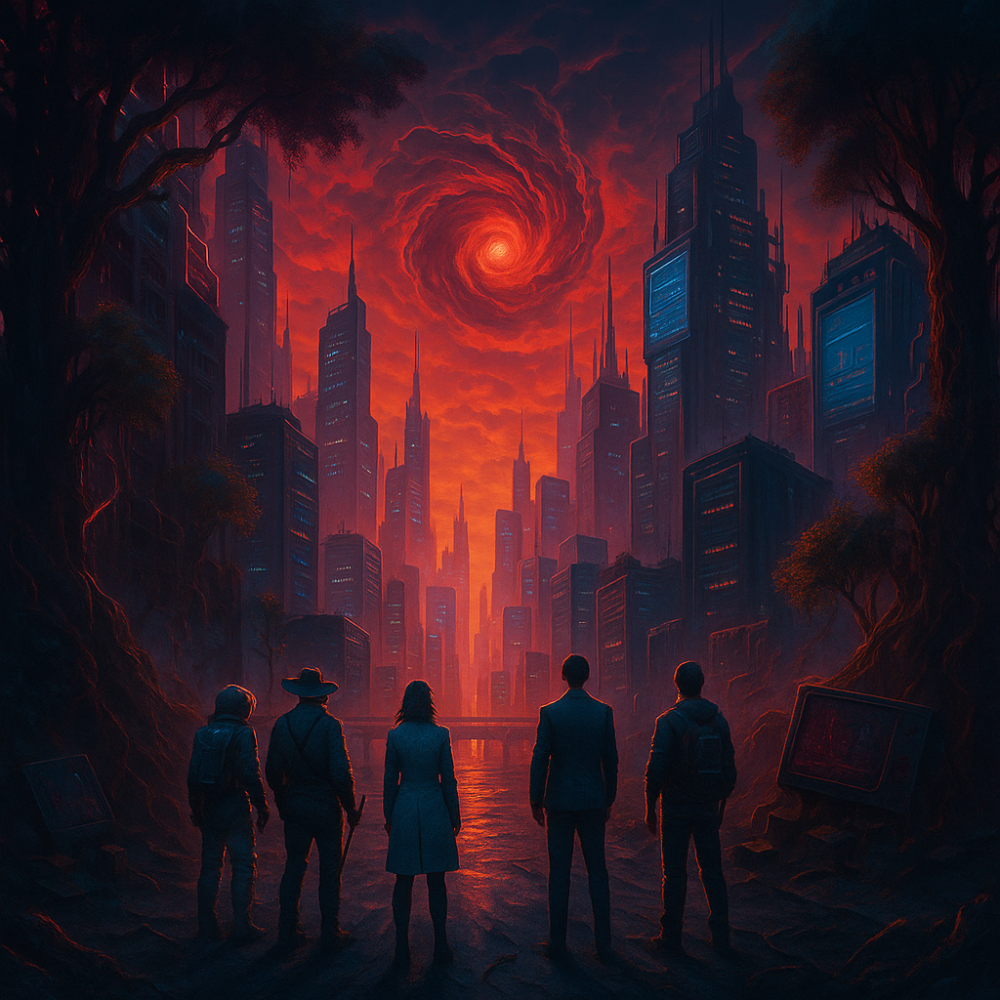
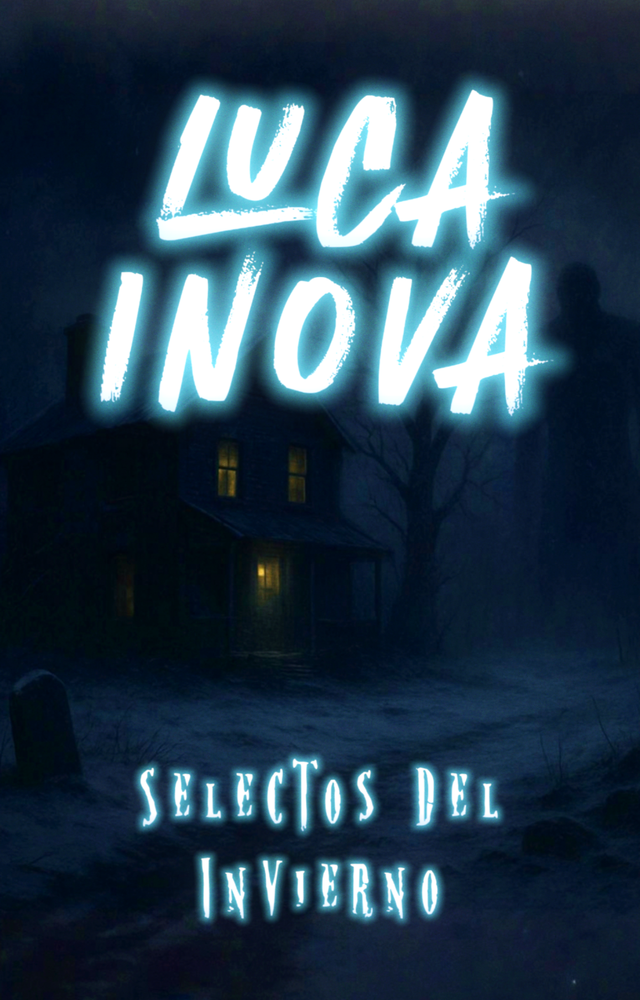
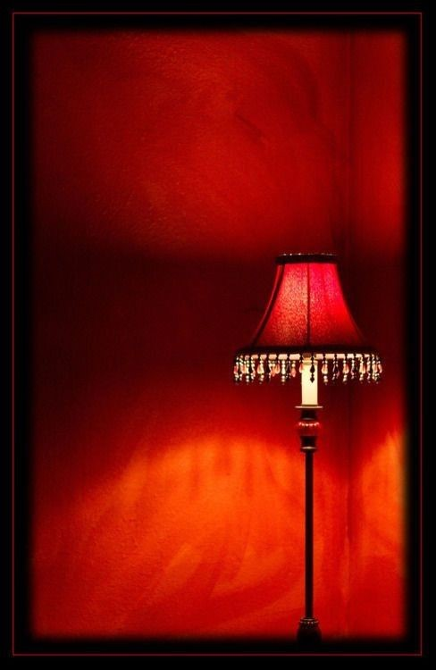

Los Cinco Epístoles
Narrativa epistolar sobre la lenta desintegración de un mundo en crisis. Seis voces documentan el final.
Leer Historia →
Explora la cronología del desastre.

En estos siete relatos de terror visceral, te adentrarás en paisajes desolados y perturbadores. Las respuestas no son lo que esperabas y las preguntas sobre tu propio pasado te perseguirán hasta el final. Una obra que redefine el miedo atmosférico en la era digital.

Narrativa epistolar sobre la lenta desintegración de un mundo en crisis. Seis voces documentan el final.
Leer Historia →
Trece incursiones en un realismo donde lo cotidiano se vuelve amenaza. De Lanús a Villa Crespo, algo acecha.
Próximamente 2026